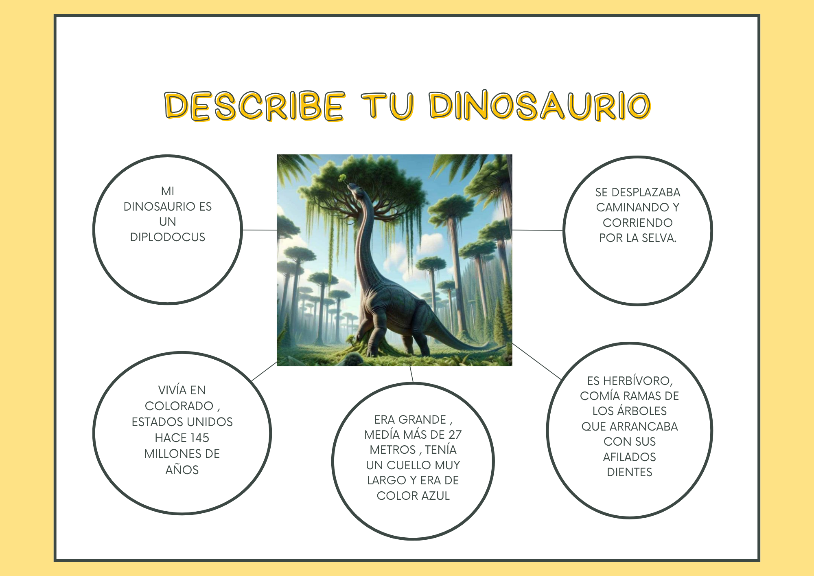

Poscast jurásico
¡Atención, explorador o exploradora!
Ahora vas a realizar la última misión. Vas a crear un podcast sobre un dinosaurio.
Un podcast es un audio que se graba con la voz para explicar información. Es como un pequeño programa de radio donde cuentas algo para que otras personas lo escuchen.
En esta actividad, vas a grabar tu voz para explicar cómo es un dinosaurio.
Para hacerlo, vas a utilizar el ordenador o la tablet con ayuda de tu profe. Antes de grabar, es muy importante preparar lo que vas a decir. Para ello, vamos a usar un pequeño guion que te ayudará a organizar tus ideas.

Antes de empezar, fíjate en el ejemplo que hemos visto.
1.Una imagen del dinosaurio
2.El nombre del dinosaurio
3.Cómo es (grande, pequeño, cuello largo…)
4.Qué come (plantas, carne o de todo)
5.Cómo se desplaza (terrestre o volador)
Para ayudarte a escribir, puedes usar estas frases:
“Mi dinosaurio es…”
“Tiene…”
“Come…”
“Se desplaza…”
Antes de grabar, practica con ayuda de tu profe. Cuando estés preparado o preparada, graba tu podcast.
Recuerda algunos consejos importantes: habla despacio, usa frases cortas, vocaliza bien y no pasa nada si te equivocas, puedes repetir.
¡Ánimo!